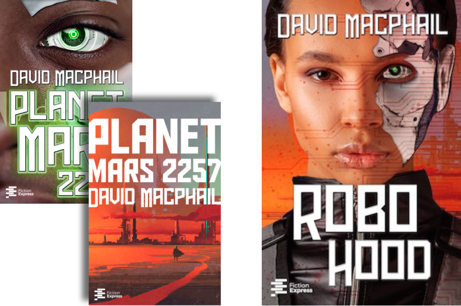

DISEÑANDO CUBIERTAS
Un proyecto de diseño de cubierta suele empezar con una investigación del género para poder crear una portada adecuada al mercado. A partir de ahí, surgen varias ideas potenciales y pongo a papel (mejor dicho, a pantalla) aquellas que funcionan mejor para el proyecto. Cuando ya tengo algunas opciones interesantes, es importante consultar con el equipo editorial o el autor, según sea el caso, y una vez que tengamos una portada ganadora puedo proponerme hacer la versión final.
Algunas herramientas que utilizo durante el proceso:
- Photoshop (layouts, edición de fotografías, etc.)
- Illustrator (especialmente para ilustraciones vectoriales)
- Procreate (ilustración digital)
